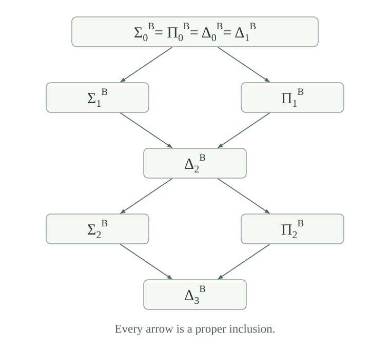

Fix an oracle \(B\subseteq\mathbb N\). The classes \(\Sigma_n^B,\Pi_n^B,\Delta_n^B\) are defined by alternating numerical quantifiers over total \(B\)-computable matrices. Independently, the finite jumps satisfy \(B^{(0)}=B\) and \(B^{(n+1)}=J(B^{(n)})\). The following is Post’s theorem.
For every \(n\ge0\) and every set \(S\subseteq\mathbb N\),
The many-one maps here are ordinary total computable functions. The first equivalence, and the corresponding decision assertion, also hold for relations of every fixed finite arity after the specified tuple coding.
Both the superscript oracle and the jump count matter. For example, \(\Sigma_1^B\) means recognition with \(B\), while \(\Sigma_2^B\) means recognition with \(J(B)\). A \(\Delta_1^B\) set is already decidable with \(B\). We prove the correspondence below, starting with the finite information used in a successful calculation.
Use the established list code and its total entry function \((u)_q\), which is zero beyond the decoded list. Define
Every number \(u\) describes a finite oracle, even when its list entries were not bits. The function \(\beta\) is ordinary primitive recursive, and it is exactly \(\chi_{F_u}\). For any oracle \(A\) and bound \(k\), the list \([\chi_A(0),\ldots,\chi_A(k-1)]\) has a code \(u\) agreeing with \(A\) below \(k\). This is a finite existence assertion; it does not give an ordinary algorithm for finding that prefix of an arbitrary oracle.
Write \(u\equiv_k A\) for the bounded agreement condition
At \(k=0\) this condition is vacuous. Agreement on a few listed answers will not by itself certify that a program halts: the next construction also checks the entire bounded calculation.
There is one ordinary primitive-recursive function \(V\), jointly in its four numerical inputs, with
Thus \(C(u,k,e,x)\), defined to mean \(V(u,k,e,x)>0\), is an ordinary primitive-recursive computation certificate. Its allowance \(k\) is part of the certificate. The finite program computing this test is fixed before \(u,k,e,x\) and before any genuine oracle.
Use exactly the guarded finite-table algorithm. At allowance \(j\), its table \(H_j(e)\) has rows \(p\le e\) and entries at inputs \(z<j\). Start with empty rows at \(j=0\). To build \(H_{j+1}(e)\), construct rows in increasing code order, and within each row construct entries at \(z=0,\ldots,j\). A proper child program reads its completed row in the current table. A recursive call at the same program reads the old table. A lookup outside the relevant input range returns failure, encoded by zero.
Retain every ordinary clause of that algorithm and replace its query-row instruction by “write \(\beta(u,z)+1\).” For example, a composition entry first looks up the inner program. If it is zero, write zero. Otherwise subtract one to recover its value \(v\), look up the outer program at input \(v\), and copy that entry, including failure if \(v\) is outside its row. Recursion and search use the same old-table and current-table clauses as before. No output is bounded by the allowance.
The loops over allowance, code and input are primitive recursions on coded finite accumulators. Their arithmetic, case tests, list access and new bit instruction are all ordinary primitive recursive jointly with the retained parameter \(u\). This specifies a fixed finite primitive-recursive scheme, and hence a fixed ordinary program for \(V\) and its positivity test. Induction on the allowance and then the row proves the invariant: every completed entry is the original bounded value with oracle \(F_u\). Finally return row \(e\) at \(x\), or zero when \(x\ge k\). This is the asserted identity.
If \(u\equiv_k A\), then for every \(e,x\),
More generally compare the two tables at every allowance \(j\le k\), for the same maximum code \(e\). Induct on \(j\) and then on the current row. Empty tables agree. In a new query row the input is \(z<j+1\le k\), so the two written bits agree. Ordinary leaves do not consult either oracle. At every compound clause, the old-table lookups agree by the allowance induction and the current-table lookups agree by the row induction. Guards and subsequent arithmetic therefore agree too.
In particular, an intermediate output that becomes a new input is checked by the guard at its own call. If it is too large, both lookups fail; the evaluator does not query that large number first. Even constructing the full table for all rows introduces only queries at the current row inputs, all below \(k\). Its final lookup proves the equality, including the immediate failure when \(x\ge k\).
For every oracle \(A\), program index \(e\), and input \(x\),
If the run halts, bounded completeness gives an allowance \(k\) with positive bounded value. Code the first \(k\) actual bits of \(A\) by \(u\). Agreement and make \(V(u,k,e,x)\) positive, giving the certificate. A successful allowance cannot be zero, but the formula need not impose this separately because its checker already rejects zero.
Conversely, the agreement lemma transfers a positive checked value to \(b^A(k,e,x)\). Bounded soundness then gives an actual halting run. If an exact output \(y\) is required, replace positivity by \(V(u,k,e,x)=y+1\); the same two directions give exactly \(\varphi_e^A(x)\downarrow=y\). Thus the certificate contains finite computation, not just a proposed transcript of oracle answers.
Suppose \(A\in\Sigma_n^B\), where \(n\ge0\). The joint relation \((u,k)\mapsto u\equiv_k A\) belongs to \(\Delta_{n+1}^B\).
The complement of \(A\) is \(\Pi_n^B\). By padding, both membership predicates belong to \(\Delta_{n+1}^B\). For each \(q\), equality of a guessed bit with the real bit is equivalent to
The bit tests are ordinary decidable, hence belong to both polarities at that level. Computable preimages and finite Boolean closure put this joint relation of \(u,q\) in \(\Delta_{n+1}^B\). Its bounded universal quantification over \(q<k\) stays there by bounded closure, with \(u,k\) retained as free parameters. Both positive and negative oracle answers are checked. At \(n=0\), one can do better: a \(B\)-decider for \(A\) checks the finitely many bits directly, so the agreement relation is already \(\Delta_0^B\).
For every \(n\ge0\), if \(A\in\Sigma_n^B\) and \(S\) is \(A\)-c.e., then \(S\in\Sigma_{n+1}^B\). The assertion holds at every fixed finite arity.
Choose one recognizing index \(e\), so \(x\in S\) exactly when \(\varphi_e^A(x)\) halts. This is an \(A\)-oracle recognizer: its finite-oracle simulation must replace queries to \(A\), the oracle actually used by that program. By ,
For \(n\ge1\), the bracketed joint relation is \(\Sigma_{n+1}^B\): the checker is ordinary decidable and agreement is \(\Delta_{n+1}^B\). Its two initial existential variables merge into that class’s existing first existential block, using positive-level existential closure and pair coding. Therefore the whole description is \(\Sigma_{n+1}^B\).
At \(n=0\), both parts of the bracket are \(B\)-decidable by the stronger base case of . Pairing \(u,k\) gives one existential quantifier over a \(B\)-computable matrix, so the result is \(\Sigma_1^B\). This treats the base without asserting that unbounded search preserves decidability. For a relation on \(r\) inputs, replace \(x\) throughout by its tuple code; all \(r\) coordinates remain free in the resulting matrix.
For a relation \(P\subseteq\mathbb N^r\), let \(d_r(c)=((c)_0,\ldots,(c)_{r-1})\) and \(P^\#(c)\leftrightarrow P(d_r(c))\). At each relative hierarchy level, classification of \(P\) and \(P^\#\) agrees. Recognition and decision with any fixed oracle \(D\) also transfer in both directions.
The hierarchy assertion is the free-tuple coding theorem. For oracle algorithms, an input \(c\) can be decoded to \(d_r(c)\) and then re-encoded by \(L\) before running a recognizer for tuple-coded \(P\). Conversely use \(L(\bar x)\) on the original tuple, since \(d_r(L(\bar x))=\bar x\). Both input transformations are ordinary primitive recursive and preserve the truth of membership. Compose a recognizer with these total transformations; for a decider the same compositions preserve both characteristic bits and termination.
This defines the recognizer on every numerical input, including codes of lists of the wrong length. At \(r=0\), the decoder always gives the unique empty tuple and its re-encoding is the empty-list code. In particular, a binary tail \(T(x,y)\) in the induction below can be replaced by the genuine unary set \(\{c:T((c)_0,(c)_1)\}\), and its oracle test can then be applied to \(L([x,y])\). The induction hypothesis is never silently applied to a two-variable predicate as if it were unary.
For every \(n\ge0\), \(S\in\Sigma_{n+1}^B\) if and only if \(S\) is \(B^{(n)}\)-c.e., simultaneously for all fixed finite arities.
At \(n=0\), this is the existing first-level recognition theorem, including its tuple bridge. Suppose the equivalence holds at \(n\). Because \(B^{(n+1)}=J(B^{(n)})\) is \(B^{(n)}\)-c.e., the induction hypothesis first gives
Now let \(S\in\Sigma_{n+2}^B\). Remove its first existential position: \(x\in S\Longleftrightarrow\exists y\,T(x,y)\), where the joint tail \(T\) is \(\Pi_{n+1}^B\). Its complement is \(\Sigma_{n+1}^B\). Apply the induction hypothesis to the coded binary relation from . That complement is \(B^{(n)}\)-c.e., so jump completeness gives an ordinary total many-one map reducing it to \(B^{(n+1)}\).
A \(B^{(n+1)}\)-program can compute that map, ask its one membership question, and reverse the answer. On input \(L([x,y])\) this gives a total characteristic test for \(T(x,y)\). Search \(y=0,1,\ldots\) using that test. Every failed test finishes, and the resulting program halts exactly on \(S\). Thus \(S\) is \(B^{(n+1)}\)-c.e.
Conversely, let \(S\) be \(B^{(n+1)}\)-c.e. The membership assertion for \(B^{(n+1)}\) already obtained above and , at level \(n+1\), give \(S\in\Sigma_{n+2}^B\). For more than one free input, code the entire tuple before this argument and decode it afterwards, using the bridge in both directions. Its ordinary transformations leave all free coordinates available. This completes the simultaneous finite-arity induction.
For all \(n\ge0\), the remaining equivalences in hold:
Apply jump completeness with oracle exactly \(B^{(n)}\). If \(e\) recognizes \(S\) with that oracle, the specified ordinary primitive-recursive input-freezing map \(x\mapsto f(e,x)\) reduces \(S\) to \(J(B^{(n)})=B^{(n+1)}\). Conversely every ordinary computable preimage of that relative jump is \(B^{(n)}\)-c.e. Combining with gives the many-one assertion. An oracle is used by the recognizer, but not to compute this numerical reduction map.
A \(\Delta_{n+1}^B\) set and its complement are both \(\Sigma_{n+1}^B\), so both are \(B^{(n)}\)-c.e. by the recognition correspondence. Relative two-sided recognition gives the required total characteristic program. Conversely a \(B^{(n)}\)-decider recognizes both signs, hence both are \(\Sigma_{n+1}^B\). Complement duality puts the set in their intersection. Composing with the tuple transformations gives the same decision characterization in every finite arity.
For the ordinary second ambiguous level, the limit lemma gives another characterization: these are exactly the membership problems admitting computable guesses that eventually settle correctly on every input.
For the algorithmic hierarchy used here,
The zero-level equality follows from the empty-prefix definition; the first-level equality follows from Post’s theorem at \(n=0\). In contrast, \(B'\in\Sigma_1^B\setminus\Pi_1^B\), and \(B''\in\Sigma_2^B\setminus\Pi_2^B\). Both are consequences of the strictness argument next. Without a superscript take \(B=\varnothing\); the first jump is many-one equivalent to the ordinary halting set, with the two numberings kept distinct.
For every \(n\ge1\),
Hence \(\Sigma_n^B\) and \(\Pi_n^B\) are incomparable, and \(\Delta_n^B\) is a proper subclass of each. The individual \(\Sigma\) and \(\Pi\) sequences increase properly at every step from level zero. The \(\Delta\) sequence increases properly from level one onward, with \(\Delta_0^B=\Delta_1^B\).
The jump \(B^{(n)}\) is c.e. in \(B^{(n-1)}\), so Post’s theorem puts it in \(\Sigma_n^B\). If it were also \(\Pi_n^B\), it would be \(\Delta_n^B\), hence computable in \(B^{(n-1)}\). This contradicts strictness of that very jump. Complement duality gives the second witness and the assertions about the intersection.
For \(n\ge0\), the witness \(B^{(n+1)}\) lies in \(\Sigma_{n+1}^B\) but not \(\Pi_{n+1}^B\). Since padding puts \(\Sigma_n^B\) inside \(\Pi_{n+1}^B\), it cannot lie in \(\Sigma_n^B\). This proves proper increase of \(\Sigma\), and complementation gives the \(\Pi\) assertion. Finally, for \(n\ge1\), the set \(B^{(n)}\) belongs to \(\Delta_{n+1}^B\) by padding but not \(\Delta_n^B\). The base equality has already been checked.

For \(n\ge1\), a set \(H\) is \(\Sigma_n^B\)-complete if \(H\in\Sigma_n^B\) and every \(S\in\Sigma_n^B\) satisfies \(S\le_m H\), using ordinary total computable maps. Post’s theorem shows that \(B^{(n)}\) is \(\Sigma_n^B\)-complete. More precisely,
If \(H\) is complete, membership in the class gives \(H\le_m B^{(n)}\), and completeness applied to \(B^{(n)}\) gives the reverse reduction. Conversely suppose both reductions hold. Computable preimages preserve \(\Sigma_n^B\), so the reduction of \(H\) to \(B^{(n)}\) puts \(H\) in the class. Every set in the class reduces first to \(B^{(n)}\) and then to \(H\), proving completeness.
Such an \(H\) is not \(\Pi_n^B\), because otherwise its computable preimage \(B^{(n)}\) would be \(\Pi_n^B\), contradicting . In particular it is not \(\Delta_n^B\), although padding puts it in \(\Delta_{n+1}^B\). With \(B=\varnothing\) these are ordinary completeness statements. An arbitrary extra oracle is not inserted into either side: completeness for one base does not make the set complete for the hierarchy over a different base.
Let \(K\) be the ordinary diagonal halting set. Is \(J(K)\) in \(\Delta_2\)? Which of \(\Sigma_2\) and \(\Pi_2\) contains it?
Post’s theorem says that \(\Delta_2\) consists exactly of the sets computable in \(J(\varnothing)\), equivalently in \(K\). Jump strictness gives \(J(K)\not\le_T K\), so it is not \(\Delta_2\).
Applying the jump characterization in both directions to \(K\equiv_T J(\varnothing)\) shows that \(J(K)\) and \(J^2(\varnothing)\) are many-one equivalent. Thus it is \(\Sigma_2\)-complete by , and is not \(\Pi_2\). The second-level existential class contains sets that the first halting oracle can recognize without being able to decide.
Padding gives \(J(B)\in\Sigma_2^B\). Does this imply \(J(B)\notin\Delta_2^B\), or that recognizing it requires the oracle \(J(B)\) rather than \(B\)?
Neither conclusion follows. The set \(J(B)\) is already \(B\)-c.e., so its first existential level suffices for recognition. It is also decidable with oracle \(J(B)\) by one membership query, hence belongs to \(\Delta_2^B\) by Post’s theorem. It does not belong to \(\Delta_1^B\), because that would mean a \(B\)-decider for its own jump. Thus its exact lowest existential level is one, while its lowest ambiguous level is two. A padded formula supplies an upper bound, not an exclusion of smaller classes.
For \(n\ge1\), put \(H=B^{(n)}\) and let \(D=H\oplus\overline H\), with the established even/odd join. Is \(D\) in \(\Delta_{n+1}^B\)? Does it belong to \(\Sigma_n^B\cup\Pi_n^B\)?
The join with a complement is Turing equivalent to \(H\), so it is computable in \(B^{(n)}\). Post’s theorem puts \(D\) in \(\Delta_{n+1}^B\).
If \(D\) were \(\Sigma_n^B\), its ordinary computable odd-position preimage \(x\mapsto2x+1\) would put \(\overline H\) in \(\Sigma_n^B\), contrary to . If \(D\) were \(\Pi_n^B\), the even-position preimage \(x\mapsto2x\) would put \(H\) in \(\Pi_n^B\), again a contradiction. Therefore
At level zero this strict assertion fails: both old branches and \(\Delta_1^B\) are exactly the \(B\)-computable sets. The witness proves the positive-level gap without assuming any incomparable Turing degrees.
Call a set arithmetical if it belongs to some finite ordinary hierarchy level. By the arithmetic prefix comparison, these are exactly the sets with a finite alternating arithmetic prefix over a bounded arithmetic matrix. Then
If \(S\in\Sigma_n\) or \(S\in\Pi_n\), padding gives \(S\in\Delta_{n+1}\). Post’s theorem makes it computable in \(J^n(\varnothing)\). Conversely, computation in \(J^m(\varnothing)\) gives \(S\in\Delta_{m+1}\), hence a finite-level definition. A computable set is included with \(m=0\), and it has a positive-level arithmetic definition even though the algorithmic and bounded-formula conventions at level zero differ.
The existential quantifier chooses a finite jump for the entire membership problem. It does not supply one finite jump that decides every arithmetical set: for each \(m\), the next jump \(J^{m+1}(\varnothing)\) is itself arithmetical and is not computable in \(J^m(\varnothing)\), by jump strictness.